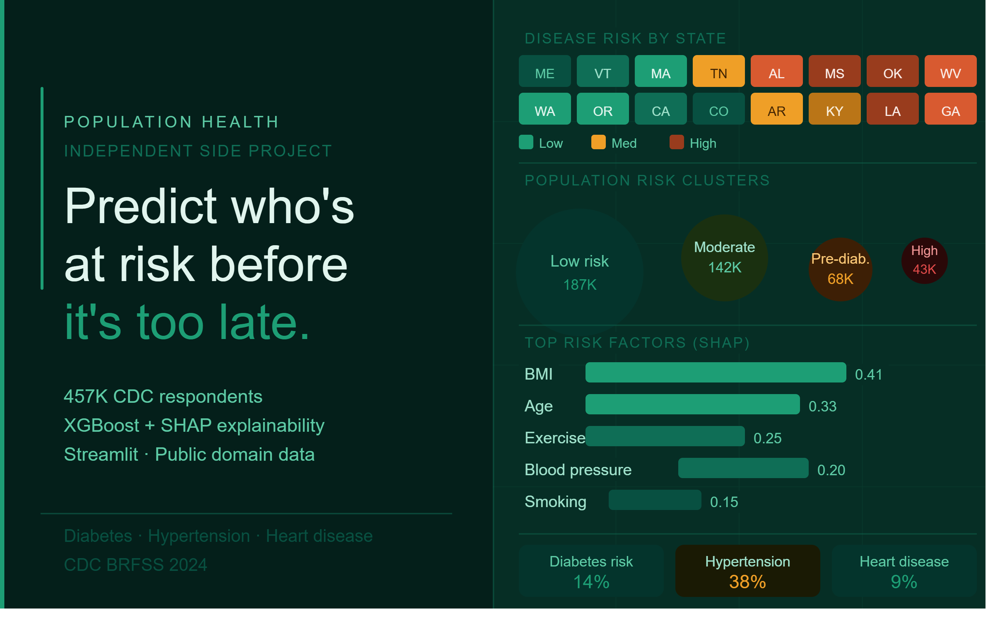
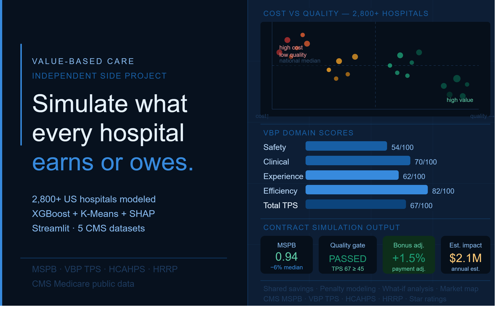
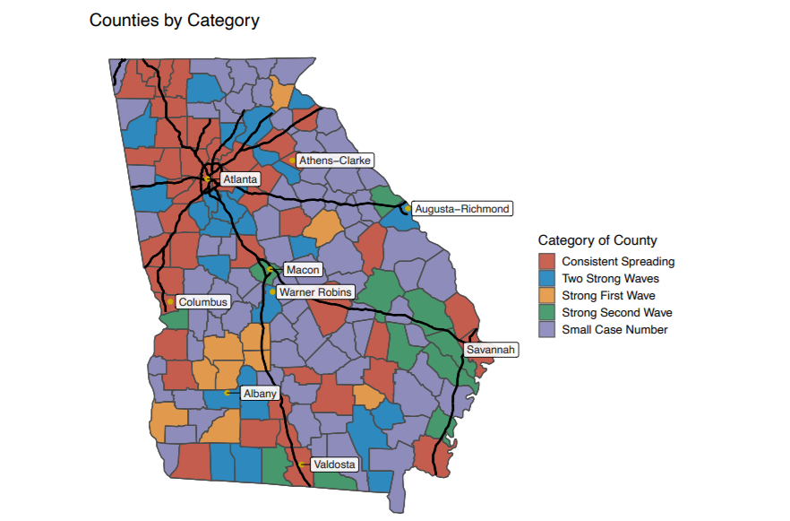
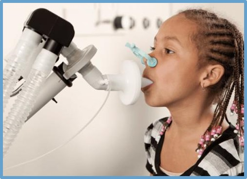
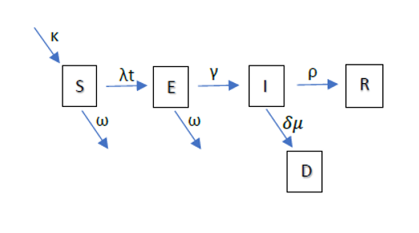

Hi, I'm Holin!
I am a healthcare research analyst and statistical programmer with expertise in
real-world evidence (RWE), pharmacoepidemiology, infectious disease modeling,
and healthcare claims analytics with 5 years of experience.
I currently work on federal public health research projects supporting FDA and CDC initiatives
involving vaccine surveillance, post-market drug safety monitoring and healthcare utilization by using Medicare and Medicaid claims data.
My technical background includes large-scale healthcare data engineering,
causal inference, survival analysis, machine learning automation,
and reproducible research pipelines using SAS, R, and Python.
My healthcare research work supports federal public health agencies in generating real-world evidence
and informing regulatory and policy decision-making related to post-market drug safety surveillance, vaccine uptake monitoring, and vaccine effectiveness evaluation.

A machine learning web application that analyzes 457,000+ CDC survey respondents to predict individual chronic disease risk across diabetes, hypertension, and heart disease. Built with XGBoost and SHAP explainability,
the app delivers personalized risk scores alongside plain-language explanations of the top contributing health factors.

An AI-powered simulation tool that models value-based care contract outcomes — shared savings, bonuses, and penalties — for over 2,800 US hospitals using five linked CMS public datasets. The app combines multiple parameters and a what-if analyzer showing which improvements would most move the needle.
Powered by XGBoost, K-Means clustering, and SHAP, it gives payers, ACOs, and health systems a transparent, data-driven lens on hospital value.

A FDA-commissioned retrospective cohort study which demonstrated that denosumab (Prolia) carries a 20× higher risk of severe hypocalcemia in older dialysis-dependent women compared to oral bisphosphonates
— findings that directly informed an FDA-mandated boxed warning update for the drug.

A target trial emulation study used Medicare claims data to demonstrate that denosumab (Prolia) carries a hypocalcemia risk that escalates with worsening CKD stage,
with dialysis-dependent patients facing a 3.01% emergent hospitalization rate compared to 0% with bisphosphonates, findings that jointly supported the FDA-mandated boxed warning update for Prolia.

A CDC-commissioned vaccine effectiveness study by using Multivariable Cox proportional hazards models with Medicare claims data to evaluate whether RSV vaccination reduces the risk of RSV-associated thromboembolic events,
contributing to the evidence base supporting RSV vaccine policy for older adults.

A vaccine uptake study on calculating biweekly RSV vaccination coverage across 16 million Medicare fee-for-service beneficiaries from 2023 to 2025, revealing modest overall uptake of 27% with notable disparities by age, nursing home residency,
and underlying medical condition — findings designed to inform vaccine effectiveness studies and guide updated immunization recommendations.

A study used both cohort and self-controlled risk interval designs across Medicare and MarketScan commercial claims data to quantify neurologic and immune-mediated adverse event risks following COVID-19 diagnosis,
finding strong associations with Guillain-Barré syndrome (HR up to 9.6×) and immune thrombocytopenia across both populations and study designs.

A vaccine study used mixed-effects regression across the Alpha, Delta, and Omicron waves to demonstrate that COVID-19 vaccination coverage among adults 65 and older was consistently and strongly associated with reduced mortality at the population level
while naturally acquired immunity showed no independent protective effect after controlling for vaccine coverage.

An infectious disease surveillance study on estimating the county-level magnitude of infectiousness (eg. time-varied reproductive number) in Georgia from March to July in 2020 by using designed tranmission-based algorithm and maximum likelihood methods to understand spatiotemporal variation of COVID-19 transmission in Georgia. (Published)

An infectious disease dynamics study on quantifying the roles of vomiting, diarrhea, and resident vs. staff in norovirus transmission in 107 U.S. nursing home outbreaks and evaluated the intervention effect on each outbreak by using Wallinga-Teunis method, regression analysis and applying stochastic infectious disease model. (Published)
A spatial epidemiological study on determining the province-level spatial heterogeneity and dependence of HIV incidence rate in China, 2018 and explored the association between HIV incidence rate and spatial variety of education level and healthcare resources by using the spatial algorithms and analysis tools on disease mapping.

A longitudinal analysis and statistical report on the developmental of pulmonary function in children with asthma and the impact of early intervention of anti-inflammatory drugs by using SAS. Data source was a teaching dataset from the Childhood Asthma Management Program (CAMP) provided by the National, Heart, Lung and Blood Institute.

An infectious disease modeling study on quantifying the infectiousness from asymptomatic COVID-19 cases in Wuhan, China by using sensitivity analysis with the reference of reported case data in Wuhan and building a deterministic compartmental SEIR model with parameters reflecting reality situation of pandemics in Wuhan.
A genetic sequence analysis on calculating the GC contents and CpG deficiencies on multiple coronaviruses (SAR-CoV, SAR-CoV-2, MERS-CoV and 2 two bat derived SARS-like coronaviruses) to see which coronavirus has the most potentially effective mechanism to escape the anti-virus activities on human bodies.